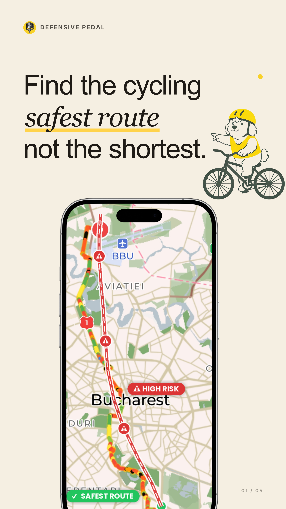
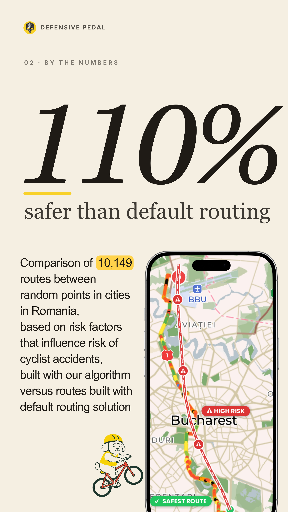
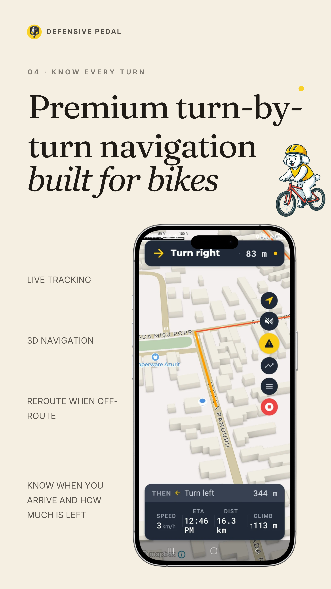
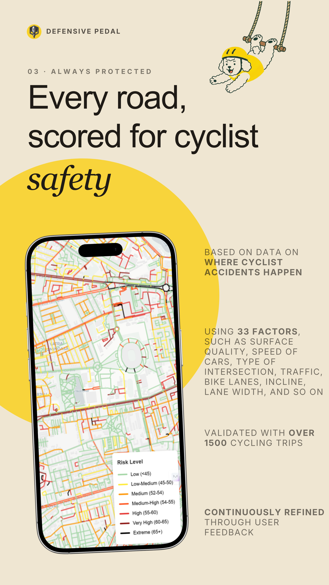

6 : 1
Decalajul fricii
Șase oameni vor să meargă cu bicicleta pentru fiecare unul care chiar o face. Frica de trafic — nu lipsa de interes — este bariera #1 a ciclismului urban.
Singura aplicație de navigație care te ghidează pe cele mai sigure străzi, nu pe cele mai rapide — folosind peste 79 de factori de risc rutier. Construită pentru bicicliștii cărora le pasă să ajungă acasă, nu primii.
Alături de peste 900 de bicicliști pionieri · Susținută de Banca Mondială & EIT Urban Mobility

Pentru fiecare biciclist activ, șase oameni vor să pedaleze, dar simt că e prea riscant. Navigația standard agravează lucrurile — te trimite pe cele mai rapide drumuri, nu pe cele mai sigure.
Șase oameni vor să meargă cu bicicleta pentru fiecare unul care chiar o face. Frica de trafic — nu lipsa de interes — este bariera #1 a ciclismului urban.
Decesele bicicliștilor în Europa au scăzut cu doar 5% într-un deceniu, în timp ce decesele rutiere totale au scăzut cu 24%. Decalajul ciclistic se adâncește.
România are cea mai mare rată a deceselor bicicliștilor din Uniunea Europeană. Începem de unde contează cel mai mult.
Am analizat 10.149 de rute între puncte aleatorii din zone urbane românești, comparând rutarea noastră de siguranță cu indicațiile standard pentru biciclete.
Rezultatul: rutele generate de Defensive Pedal sunt
Măsurat ca risc cumulat de-a lungul fiecărei rute, folosind peste 79 de factori de risc rutier pe segment.

Punctăm fiecare segment de drum folosind peste 79 de factori — lățimea benzii, viteza maximă, calitatea suprafeței, complexitatea intersecțiilor, semnalizarea, zonele de portieră deschisă și multe altele.

Când setezi o destinație, algoritmul nostru analizează fiecare rută posibilă și o alege pe cea cu cel mai mic risc cumulat — nu doar pe cea mai scurtă.

În timp ce pedalezi, aplicația te avertizează despre pericolele care urmează — gropi, încadrări ostile, intersecții periculoase — ca să fii pregătit, nu surprins.
Alte aplicații tratează ciclismul ca pe o variantă mai lentă a condusului. Noi îl tratăm ca pe o problemă în sine — cu propriile date, propriile riscuri și propria soluție.
Construită pe datele OpenStreetMap, Defensive Pedal funcționează în orice oraș din lume. Acoperirea și calitatea datelor variază — dar motorul de rutare este global din prima zi.
Alege cât de mult să prioritizezi siguranța față de viteză. Vrei ruta absolut cea mai sigură? Sau un echilibru? Setezi o dată, schimbi oricând.
E-bike sau manuală? Pentru dealuri sau doar pentru teren plat? Ocoluri pitorești sau utilitate pură? Spune-i aplicației o dată, și fiecare rută se adaptează la tine.
Ai văzut o groapă, o intersecție dubioasă sau o bandă plină de cioburi? Apasă pentru a raporta. Ceilalți bicicliști văd instant.
Analitica este opt-in și conformă GDPR. Traseele tale sunt ale tale. Nu vindem niciodată date personale — punct.
Rutarea de bază pentru siguranță este complet gratuită — fiecare drum, în fiecare zi. Pachetele premium deblochează funcționalități avansate când ești pregătit.
Am fost uimit că pot să mă simt cu adevărat în siguranță pedalând prin București.
Defensive Pedal este o aplicație foarte utilă pentru bicicliștii urbani cărora le pasă de siguranță, nu doar de viteză. Îmi place că se concentrează pe găsirea unor rute mai sigure și ia în considerare factori reali de risc rutier, în loc să te trimită pur și simplu pe drumul cel mai rapid. Alertele pentru pericole, conștientizarea vremii și a calității aerului, plus rutarea adaptată bicicliștilor o fac să pară cu adevărat practică pentru navetă zilnică și pentru tururi prin oraș. Aplicația are un scop clar și rezolvă o problemă reală pentru cei care vor să pedaleze cu mai multă încredere.
Susținută de
Apariții în presă
Defensive Pedal a fost fondată de Victor Rotariu — biciclist pasionat care a livrat cel mai mare chatbot din România — și Oana Leta, fost Country Manager U.K. pentru iRobot, cu o vastă experiență în politici urbane.
Modelul nostru de siguranță a fost rafinat cu feedback de la peste 1.300 de contributori: bicicliști care au testat algoritmul la evenimente, au răspuns la sondajele noastre și au modelat ceea ce aplicația face bine.
Da. Rutarea de bază pentru siguranță este complet gratuită — fiecare drum, în fiecare zi. Pachete premium opționale vor debloca funcționalități avansate precum profiluri de risc personalizate și analize de rute, dar navigația care pune siguranța pe primul loc — cea care ne face diferiți — rămâne gratuită pentru toată lumea.
Defensive Pedal este optimizată să fie ușoară. Consumul de baterie este comparabil cu cel al altor aplicații de navigație GPS. Pentru drumuri lungi recomandăm un acumulator extern sau un încărcător pe ghidon — la fel ca pentru orice aplicație cu instrucțiuni pas-cu-pas.
Da — Defensive Pedal funcționează în orice oraș din lume, pentru că folosim datele OpenStreetMap. Granularitatea scorurilor de siguranță depinde însă de calitatea datelor locale. Marile orașe europene au cea mai bună acoperire în prezent, iar îmbunătățim peste tot pe măsură ce comunitatea noastră crește.
Nu încă — suntem Android-first. iOS este pe foaia de parcurs. Înscrie-te pe lista de mai jos și îți trimitem un email în momentul lansării.
Mulțumim — ești pe listă. 🚴
Modelul nostru de siguranță folosește peste 79 de factori de risc rutier pe segment, bazându-se pe cercetări oficiale europene în siguranța rutieră, date de infrastructură OpenStreetMap și pericole raportate de comunitate. Modelul a fost rafinat cu contribuția a peste 1.300 de oameni și testat pe 10.149 de rute în orașe românești — generând rute cu 110% mai sigure decât rutarea standard.
Confidențialitate prin design. Colectăm doar ce este necesar pentru a-ți oferi rute sigure. Toată analitica este opt-in, conformă GDPR și agregată/anonimizată pentru orice partajare cu parteneri instituționali. Nu vindem niciodată date personale.
Instalează gratuit din Google Play. Fără abonament. Fără card. Doar rute mai sigure.
DISPONIBIL PE Google PlayAndroid · Gratuit · Peste 79 de factori de siguranță · Rute cu 110% mai sigure